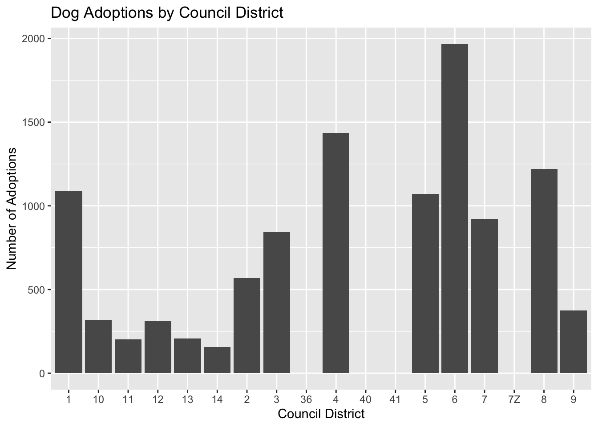
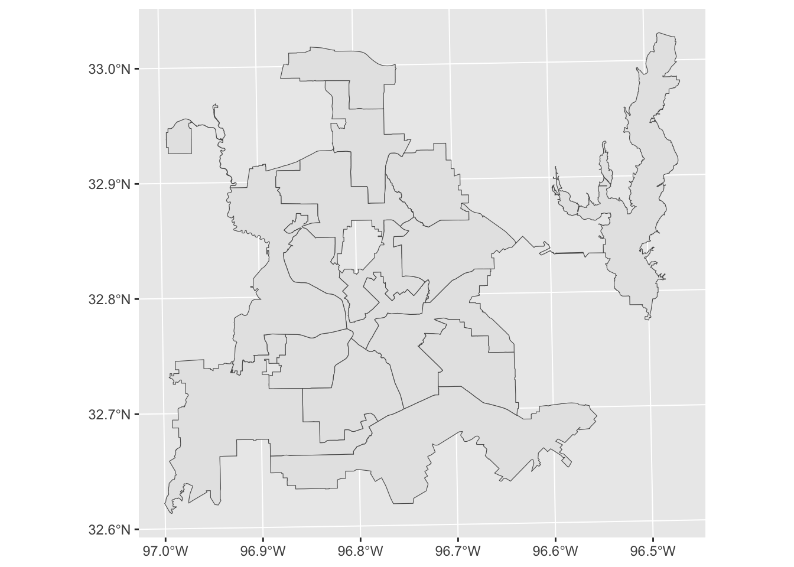
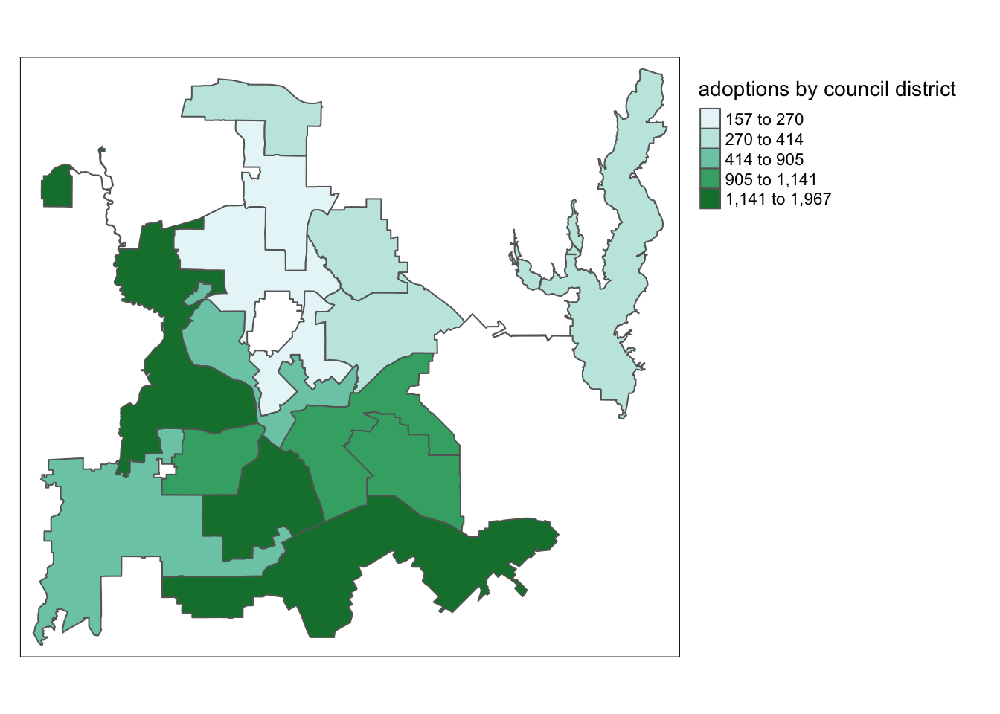
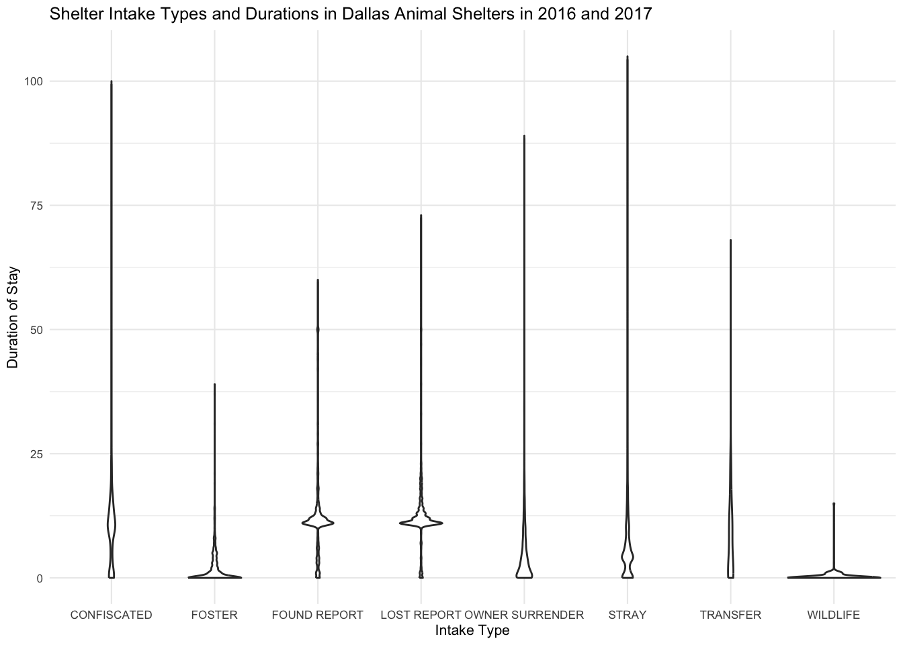
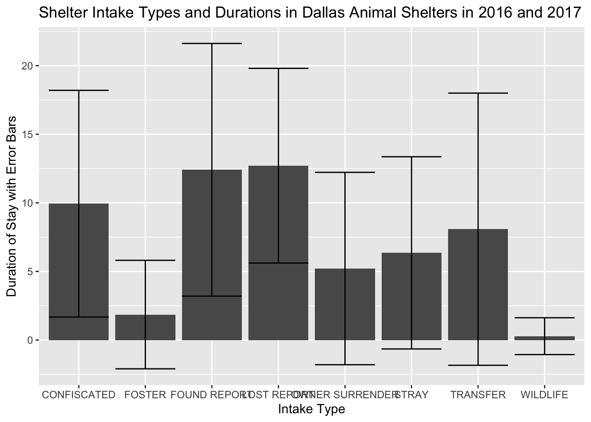
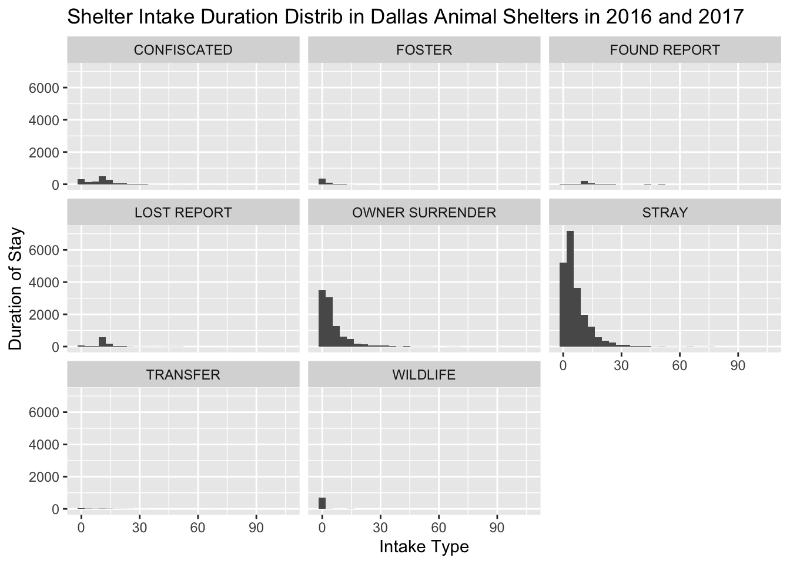

# Do not modify this chunk.#install.packages("tmap")knitr::opts_chunk$set(echo =TRUE, warning =FALSE, message =FALSE)library(ggplot2)library(dplyr)
Attaching package: 'dplyr'
The following objects are masked from 'package:stats':
filter, lag
The following objects are masked from 'package:base':
intersect, setdiff, setequal, union
library(readr)library(lubridate)
Attaching package: 'lubridate'
The following objects are masked from 'package:base':
date, intersect, setdiff, union
library(tmap)
Breaking News: tmap 3.x is retiring. Please test v4, e.g. with
remotes::install_github('r-tmap/tmap')
library(sf)
Linking to GEOS 3.11.0, GDAL 3.5.3, PROJ 9.1.0; sf_use_s2() is TRUE
Introduction:
Our data set we chose collected data across a period of one year between 2016-2017. The data is collected to keep citizens informed about the operation and activities of the shelters across the city. This data set uses information from a variety of different animal shelters across the City of Dallas, upon their intake to the shelter. Each observation/row is an individual animal entered by staff into the shelter system. There are 34819 observations. The data is across all animal types including dogs, cats and other wildlife.
We chose this data set because we are dog lovers and one of our group members is from Dallas and volunteered at a local shelter. It also seemed to have well collected data with a lot of diversity within key variables like dog breed and intake form.
Question 1: Which city council districts have the highest rate of adoption?
Introduction:
The question at hand involves investigating the adoption rates across various city council districts, specifically focusing on the variables council_district and outcome_type. To address this query effectively, it is crucial to filter the data set using the dplyr package to isolate observations related to adoptions. By narrowing down the data set to only include these instances, we can then proceed to quantify the number of adoptions in each city council district. To visually represent this information, the ggplot2 package will be employed to create a bar graph, offering a clear and concise presentation of the adoption rates across different districts.
To accomplish this analysis, the data set needs to include relevant information such as council_district and outcome_type. The data set should be pre-processed using dplyr functions to filter and extract the necessary observations related to adoptions. The quantification process involves counting the number of adoption instances within each city council district. Finally, the visualization aspect will be addressed using ggplot2 to generate a bar graph that illustrates the variations in adoption rates across different districts. My interest in this question is driven by the need to understand the geographical distribution of adoption rates within a city, which can have implications for resource allocation, community outreach, and policy planning to enhance animal welfare and adoption initiatives.
Approach:
To comprehensively address the question of dog adoption rates across city council districts, a combination of visualizations has been employed. The initial bar plot succinctly illustrates the raw counts of adoptions in each district, providing a quick overview of the districts with higher adoption rates. Building upon this, a box plot offers a more detailed perspective, showcasing the distribution of adoption rates within each district. This plot is instrumental in identifying any potential variations, outliers, or skewness in the adoption data. Finally, a faceted bar plot takes the analysis a step further by presenting individual bar plots for each council district. This approach allows for a nuanced examination of adoption patterns in each district while maintaining a clear comparative framework. Together, these visualizations offer a comprehensive understanding of the adoption landscape, enabling insights into both the overall trends and the variability within specific city council districts.
# A tibble: 5 × 13
animal_id animal_type animal_breed month year census_tract council_district
<chr> <chr> <chr> <chr> <dbl> <chr> <chr>
1 A0979593 DOG RHOD RIDGEBACK FEB 2017 1502 2
2 A0743013 DOG YORKSHIRE TERR NOV 2016 13609 11
3 A1004433 BIRD CHICKEN AUG 2017 10803 3
4 A0969724 DOG GERM SHEPHERD DEC 2016 7102 2
5 A0981479 DOG GERM SHEPHERD FEB 2017 6001 4
# ℹ 6 more variables: intake_type <chr>, intake_date <chr>, outcome_type <chr>,
# outcome_date <chr>, chip_status <chr>, animal_origin <chr>
dog <-read_csv("data/week18_dallas_animals.csv")#finding number of total adoptions per district in the data framedog_adoptions <- dog %>%filter(outcome_type =="ADOPTION") %>%group_by(council_district) %>%summarize(n_adoptions =n() )

Reading layer `Councils' from data source
`/Users/aallorant/Desktop/project01/project01-dog/data/Councils/Councils.shp'
using driver `ESRI Shapefile'
Simple feature collection with 14 features and 6 fields
Geometry type: POLYGON
Dimension: XY
Bounding box: xmin: 2430146 ymin: 6909399 xmax: 2592859 ymax: 7061339
Projected CRS: NAD83 / Texas North Central (ftUS)


Discussion:
There appears to be a wide array of differences in of adoptions by council district with districts 1, 4, 6, and 8 making up the largest four. Districts 10-14 make up the least amount of adoptions. We were able to find such a wide difference by council district reveling to us that geography is a major factor in pet adoption in the City of Dallas. Our visualization provides a clear understanding and answer to our research question.
Question 2: What types of animal intake tend to stay longer in shelters?
Introduction:
This question aims to investigate the factors influencing the duration of stay for animals in shelters, with a specific focus on different types of animal intake. To answer this query effectively, a new variable representing the duration of stay will be created using the dplyr package. Subsequently, a bar graph with error bars will be generated using ggplot2 to visually represent the average stay duration for each type of animal intake. This analysis is motivated by the need to understand the patterns in shelter stay durations, which can inform shelter management strategies and improve the overall welfare of animals in these facilities.
To address this question, the dataset should include relevant variables such as animal intake type and potentially other factors affecting stay duration. The dplyr package will be utilized to mutate a new variable indicating the duration of stay. The subsequent ggplot2 bar graph will display the average stay duration on the y-axis and different types of animal intake on the x-axis, with error bars providing insights into the variability around the average stay durations. This approach allows for a comprehensive visualization of how various animal intake types correlate with the average duration of stay in shelters, offering valuable insights for shelters to optimize their practices and enhance the overall well-being of sheltered animals.
Approach:
To address the inquiry regarding the factors influencing the duration of stay for animals in shelters, a systematic approach involving the dplyr and ggplot2 packages is employed. Firstly, a new variable representing the duration of stay is introduced using the dplyr package. This step allows for the transformation of the data set to include a critical metric—stay duration—essential for subsequent analysis. The ggplot2 package is then leveraged to create a visually informative bar graph. This graph employs the average stay duration as the y-axis variable and different types of animal intake as categorical variables along the x-axis. Including error bars in the visualization provides a measure of variability around the mean stay duration for each intake type, offering a more comprehensive understanding of the data distribution. This meticulous approach not only captures the central tendencies in shelter stay duration but also provides insights into the potential variations and uncertainties associated with each animal intake category.
Analysis:



Discussion:
Our data found that “Owner Surrender” and “stray” are by far the most common with “stray” having a significant higher share of the intake forms. This means that a large plurality of shelter animals in Dallas are strays from the street rather than from individual owners or confiscations. It is also apparent from our data that “Foster”, “Wildlife”, “Owner Surrender”, and “Stray” are the intake categories that have the lowest duration of stays out of the other intake options. Found and Lost Report in take forms have the largest average stays.